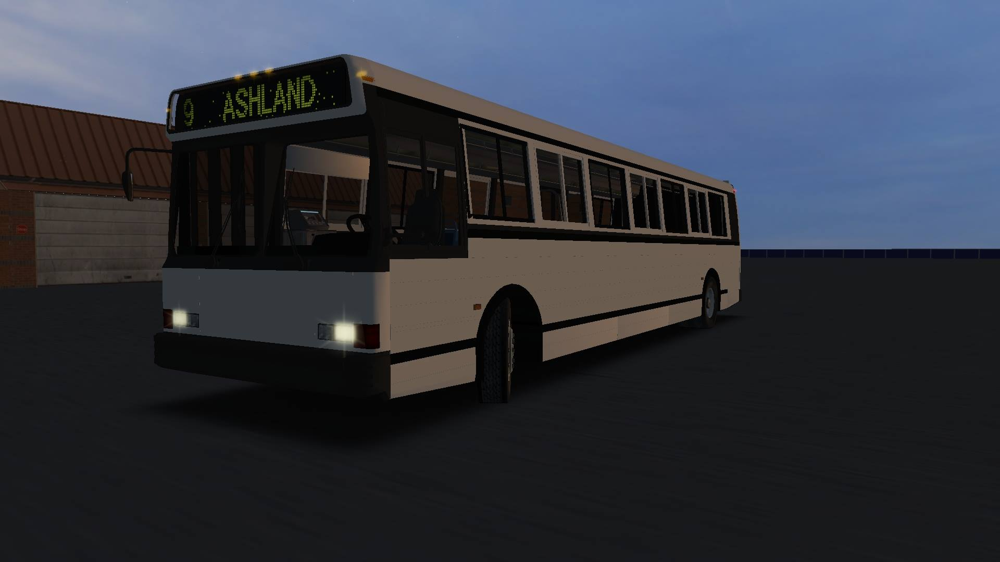

| | | | | |||||
November 25th, 2020
I am writing to inform anyone who still follows this page that the GitHub website and my email will reopen for download inquiries, as well as limited support as of Friday, November 27th, 2020.
To minimize stress, inquiries for paid buses will be processed on Thursdays, and buses will be mailed out on Fridays.
No new content will be released.
If you have questions, feel free to send me an email at
January 1st, 2020
In light of some new developments, I have decided to curtail all upcoming dates. Monday, January 6th, 2020 (previously Wednesday, January 15th) will be the last day to download or request new copies of available buses. Additionally, there may be an update for the Gillig Advantage before this date. If nothing is uploaded by that date, then it is not coming out. By Friday, January 17th, 2020 (previously Friday, January 31st, 2020) the GitHub site and the Facebook page will either be deactivated (meaning that I won’t interact with this page at all, and messages will be turned off) and/or dissolved completely.
January 1st, 2020
I have closed my Discord server, and the New Flyer HF Series is no longer available for purchase. This also means that the NABI 416/436 will not be released. January 15th, 2020 will be the last day to download or request new copies of available buses. Additionally, there may be an update for the Gillig Advantage before this date. If nothing is uploaded by that date, then it is not coming out. By January 31st, 2020 the GitHub site and the Facebook page will either be deactivated (meaning that I won’t interact with this page at all, and messages will be turned off) and/or dissolved completely.
December 12th, 2019
• Just as a heads-up,
January 1st will be the last day to purchase any vehicles available currently or in the future, and
January 15th will be the last day to download or request new copies of available buses.
By January 31st, the GitHub page, the Discord server, and this page will either be deactivated (meaning that I won’t interact with this page at all, and messages will be turned off) and/or dissolved completely.
Some have suggested that I reupload current vehicles to sites such as OMSI Webdisk. I would like to take this opportunity to confirm that I will not be re-uploading any vehicles anywhere. Whatever is reuploaded by 3rd parties after those dates is at their own discretion. I am no longer interested in getting into any petty crusades about anything OMSI-related.
A final decision has yet to be made about the 416/436, but just know that whatever outcome will be subject to these same deadlines.
October 30th, 2019
• My American Style Driver Training map is now available, and can be found on the Downloads page.
September 22nd, 2019
• As of September 20th, 2019, the Gillig Phantom will no longer be available for purchase. I don’t want to devote any more time to making sure people have their copies.
People who bought the bus are welcome to fill out the Previously Paid Buses form, but the time period in which you may receive a new bus will expand significantly (previously 24hrs, now a week).
September 5th, 2019
• As of today, my Neoplan AN460 project is scrapped.
August 16th, 2019
• I'm planning on releasing an update for the HF series buses on Saturday, August 17th.
This update will include minor fixes for the template, as well as some sounds and scripts, and will likely be the last for a little while.
This is being done so that I can work on other (public) buses I want to update before school starts.
If you have any suggestions for stuff I could fix before then, now's the time cuz after Saturday, I'm moving onto other things.
Changelogs for the upcoming update can be provided upon request.
August 4th, 2019
• The HF Series buses are now available for purchase again. If you bought the bus prior to the leak, you are eligible to recieve an AI-only New Flyer D60HF.
June 25nd, 2019
• Due to a leak and partially an internal conflict, the HF Series have been removed from purchase.
June 24nd, 2019
• The New Flyer HF Series (C40HF/D35HF) is now available for purchase
• After about a year, this site has reached 30,000 views. Thanks!
June 22nd, 2019
• The New Flyer C40HF and D35HF will be made available for purchase/download on Monday, June 24th, 2019.
June 19th, 2019
• Made a discord so if you have more questions about buses and getting maps to work n what not, you can ask them there. I'll post updates of buses I'm "servicing" or working on in there, too.
April 15th, 2019
• Some new items have appeared on the Downloads page. Keep a close eye on them!
April 3rd, 2019
• The Gillig Phantom has received an update.
Please check the email inbox associated with your PayPal to download it. If you have not received it, send me an email at xen44324434@gmail.com.
Change log:
Version 0.2.0 (3/2/19)
-Added 1998 C8.3 35096TB model.
-Removed 1998 C8.3 35102TB model.
-Fixed extraneous lights on dashboard.
-Changed rear light setup on 2004 35' ISL~Voith (made them more standard-ish).
-Added 2000 C20A096N4 model (30' Phantom w/ S50EGR~B400R).
-Removed runbox (it was doing nothing anyway).
-Changed door light model.
Version 0.2.0.1 (3/18/19)
-Removed 1995 Gillig 35' (S50~D863)
-Removed 1997 Gillig 40' (S50~B400R)
-Removed 2005 Gillig 35' (ISM~B400R)
-Removed 2005 Gillig 30' (ISC~Voith)
Version 0.2.0.2 (4/1/19)
-Fixed door light model on 40 NRD.
-Fixed location of climate on 35102
-Fixed location of blinkers on 1996 M11 spec.
NEEDS TO BE FIXED:
-Remove velocity part in fahrtuer script.
-Add interior roof brace things.
TO BE ADDED:
- Early 1990s model.
- American Seating 6468 setup for 35/30 foot model.
- More accurate ODK model
- Better looking farebox.
March 18th, 2019
• The Gillig Phantom is scheduled for an update in the coming weeks.
-Added 1998 C8.3 35096TB model.
-Removed 1998 C8.3 35102TB model.
-Fixed extraneous lights on dashboard (tried to, anyway).
-Changed rear light setup on 2004 35' ISL~Voith (made them more standard-ish).
-Added 2000 C20A096N4 model (30' Phantom w/ S50EGR~B400R).
-Removed runbox (it was doing nothing anyway).
-Changed door light model.
-Removed 1995 Gillig 35' (S50~D863)
-Removed 1997 Gillig 40' (S50~B400R)
-Removed 2005 Gillig 35' (ISM~B400R)
-Removed 2005 Gillig 30' (ISC~Voith)
November 14th, 2018
• The Xcelsior has received a minor update.
-Changed UV Mapping of mirrors
-Removed XD/XDE35
-Removed XDE40
-Removed standard XD40
-Removed XN35/40/60
November 9th, 2018
• After about 2 1/2 months, this site has reach 10,000 views. Thanks!
October 24th, 2018
• The Gillig Advantage has received a minor update.
CHANGELOG:
Version 0.6.3.1 (10/24/18)
-Added templates for all models (i.e. EPA 2001, 2004, 2007, etc).
Version 0.6.3 (10/22/18)
-Changed Voith gear selector texture.
-Reversed UV maps of mirrors so they appear in the right place.
-Changed ISL EPA 2004 sounds again.
-Changed camera views in some buses.
October 22nd, 2018
• Because of an unexpected release of the Flxible Metro, it will no longer be updated.
October 9th, 2018
• After about two and half months, this site has reached 8,000 views. Thanks!
September 21st, 2018
• After about two months, this site has reached 6,000 views. Thanks!
September 9th, 2018
• After about a month and a half, this site has reached 5,000 views. Thanks!
September 8th, 2018
• The Gillig Phantom has been updated. Please check the email associated with your PayPal. If it's not there, fill out this form
September 2nd, 2018
• New Era Transit has been released. Go download it now!
August 27th, 2018
• After about a month of being up, this site has reached 3,000 views. Thanks!
August 25th, 2018
• The Gillig Phantom can now be purchased again.

August 11th, 2018
• Some new pictures of the Flxible Metro E. The current plan is that it be available in an update for the Flxible Metro
Along with a suburban (A single door) Flxible.

| 
| 
|

|  |
August 5th, 2018
• After about a week of being up, this site has reached 1,000 views. Thanks!
July 27th, 2018
• New Era Transit has entered beta testing! Scheduled release is set for August. For latest updates, join the Discord server!

July 24th, 2018
• New Era Transit is projected to be released in August. For latest updates, join the Discord server!
July 4th, 2018
• As of today, the LFS, RTS, MCI D4500, Xcelsior, Phantom, and Advantage are no longer available on Porais Studios.
June 22nd, 2018
• The Flxible Metro has been updated! Please check your accounts for the updated file version.